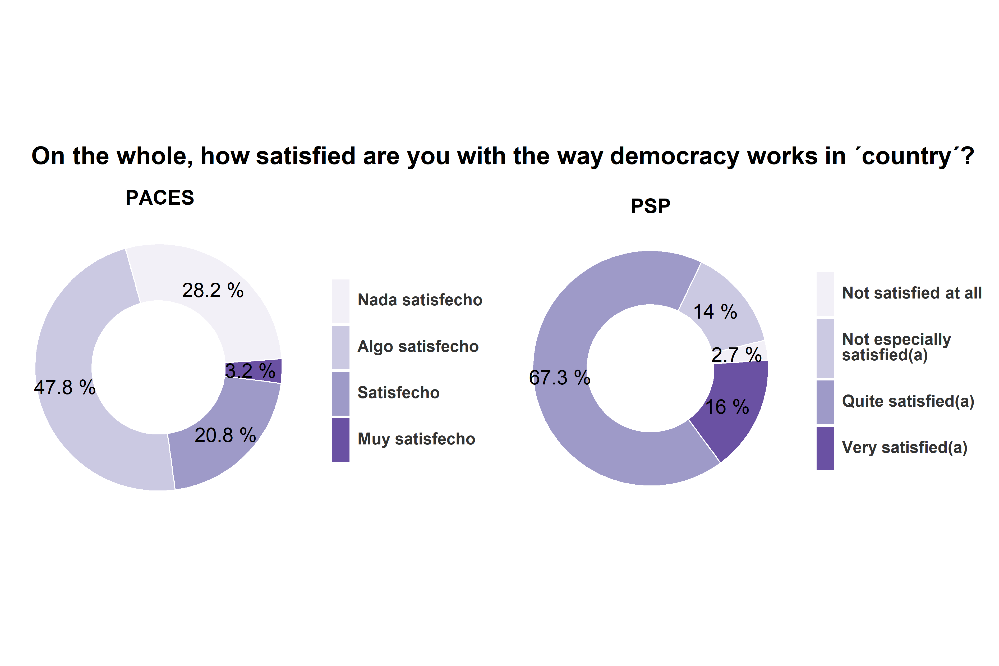
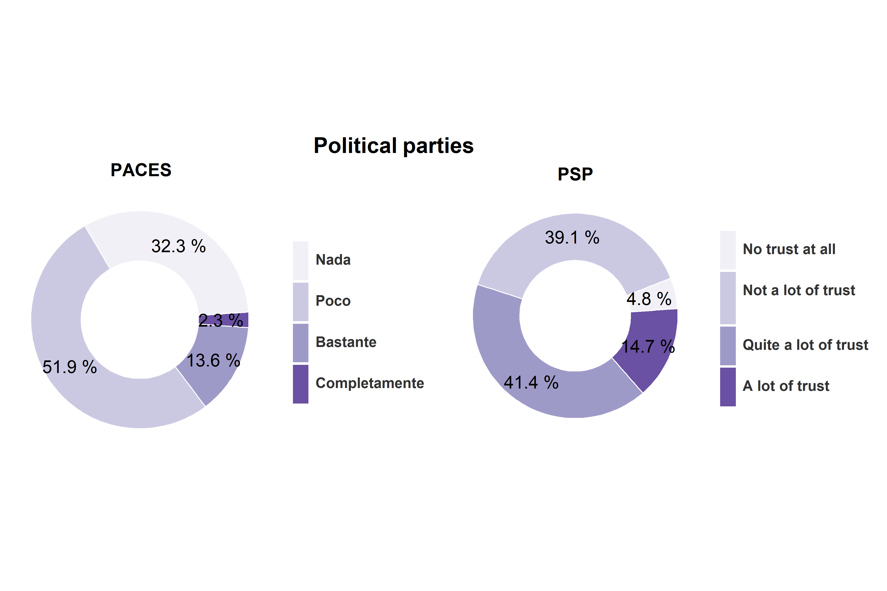
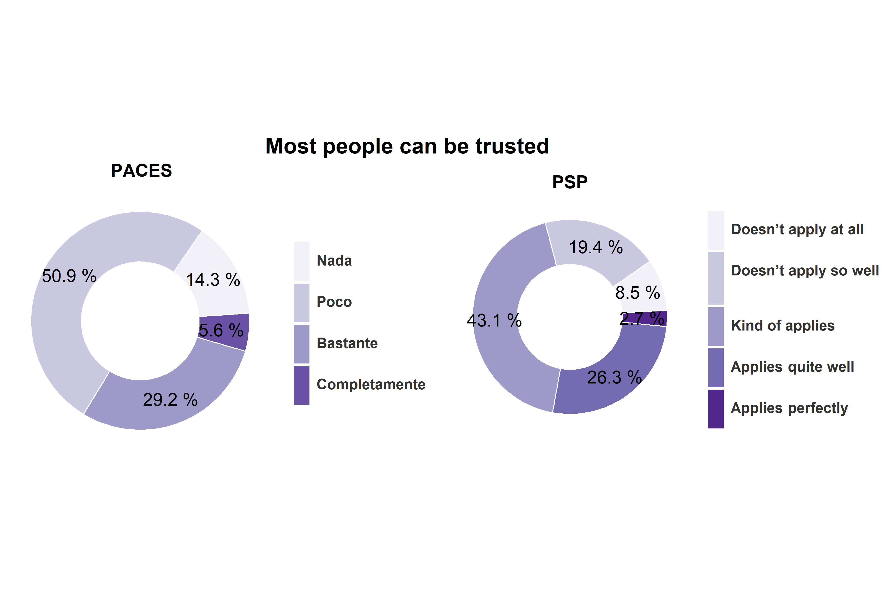
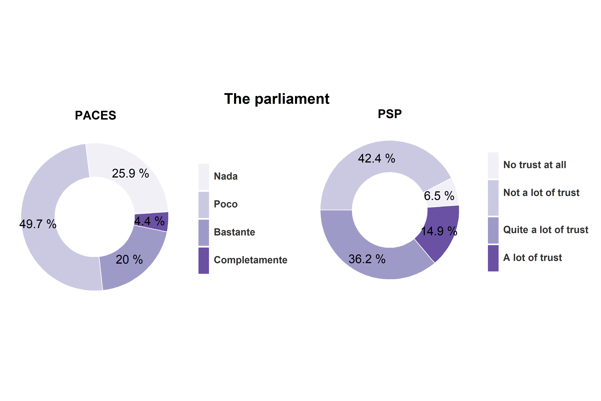
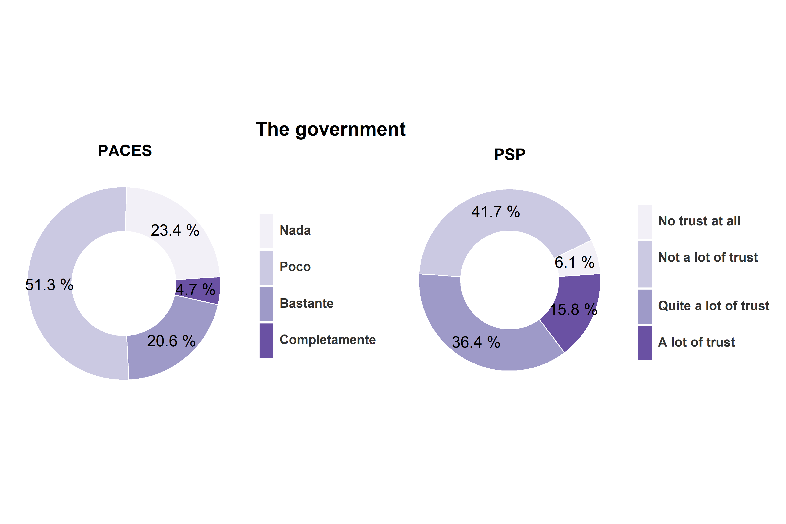
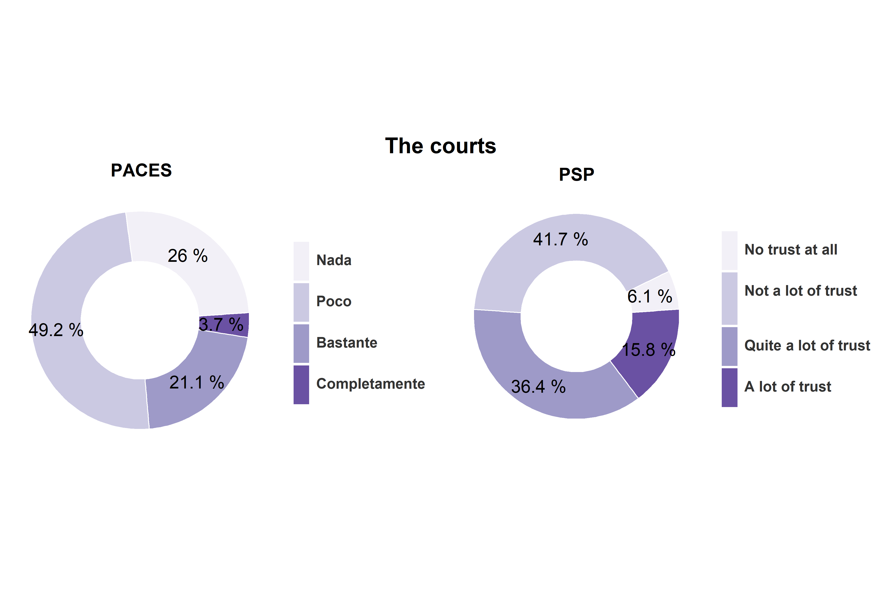

3.1 Opinion sobre su democracia
El siguiente grafico expone la satisfacción con la democracia de los jóvenes de ambos países. En ambos casos se le pregunta respecto a su satisfacción con la democracia de su propio país. La cantidad de categorías de respuesta era la misma en ambas encuestas y los mensajes son bastante similares, aunque solo las categorías extremas son equivalentes.
La satisfacción con la democracia de los jóvenes de ambos países difiere radicalmente, de modo tal que es mucho mayor en Suecia que en Chile. La cantidad de estudiantes nada satisfechos es de 28,2% en Chile y de 2,7% en Suecia. Proporcionalmente hablando, por cada estudiante insatisfecho con la democracia en Suecia hay 10 estudiantes insatisfechos con su democracia en Chile.

El que los jóvenes suecos estén más satisfechos con su democracia que los jóvenes chilenos es relativamente consistente con la calidad actual de las democracias en ambos países. Aunque según el índice de la democracia actualmente tanto en Chile como en Suecia existe una administración imparcial, controles gubernamentales y un gobierno representativo, existen diferencias sustanciales en otros aspectos. Contrario al caso Sueco, en Chile no existe una garantía real de los derechos fundamentales, ni tampoco existe un adecuado compromiso con la participación. En el caso Chileno es especialmente deficitario el acceso a la justicia y a los derechos sociales. Es razonable considerar que la ausencia de condiciones adecuadas para el desarrollo de una adecuada vida ciudadana merma la satisfacción con la democracia en el caso chileno, lo cual es consistente con la evidencia que destaca la falta de valoración de la democracia ante la falta de derechos sociales adecuados ().
3.1.0.1 Confianza en sus instituciones democraticas
El grafico venidero compara la confianza que poseen los estudiantes de los partidos políticos de sus países. Ambas preguntas tienen cuatro categorías, pero las alternativas no son equivalentes.
En ambos países existen distintos niveles de confianza en los partidos, destacando la mayor confianza que tienen los jóvenes suecos. En Suecia, más de la mitad de los jóvenes confía bastante o mucho en los partidos, mientras que en Chile esto ocurre solo con el 15% de los jóvenes. Consecuentemente existe una gran cantidad de jóvenes chilenos con nada de confianza en los partidos, proporcionalmente hablando, por cada estudiante sueco que no confía en los partidos, en chile hay 6 jóvenes que no lo hacen.
Esto es un problema para chile ya que difícilmente se puede confiar en la democracia y las instituciones democrática, si no se confía en sus principales actores, los partidos. [Consecuencia de la baja confianza en partidos]
Political parties

### Trust in people


[Comparar con la aceptación de los partidos en adultos]
Goverment
Los siguientes gráficos exponen el nivel de confianza de los jóvenes suecos y chilenos sobre el gobierno y el parlamento. Pese a las diferencias, se puede observar que la confianza no sobrepasa el 60% en ninguno de los países, existiendo en ambos amplios grupos de jóvenes con baja confianza en las instituciones democráticas. Aun así, el nivel de confianza en ambas instituciones es distinto en ambos países, existe una mayor confianza en Suecia que en Chile.
Comparando la confianza en estas dos instituciones democráticas con la confianza en los partidos, que son actores relevantes en ambos poderes, se puede observar otra diferencia entre estos países. En Suecia la mitad de los jóvenes confía tanto en los partidos como en las instituciones democráticas, con un porcentaje similar de confianza sobre los partidos, el gobierno y el parlamento. Por su parte, en chile se observa una diferencia en la confianza en estas instituciones, existiendo una mayor confianza en los poderes del estado, que en los partidos que los administran.

Chile tiene un sistema ejecutivo Suecia tiene un sistema legislativa. Este segundo es un incentivo al acuerdo, mientras que el otro a la competencia (política de la zancadilla de Castells en texto de red).
### The courts
Este grafico expone la confianza en los tribunales, desde el punto de vista de los jóvenes de Chile y Suecia.

El grafico nos sugiere nuevamente mayor confianza de los jóvenes suecos en su sistema. La proporción de jóvenes que no confía nada en los jueces de chile es un triple de lo que en Suecia.
Este resultado es consistente con la evaluación del índice de la democracia. Según este, Chile posee un sistema deficiente en torno a la garantía al derecho a la justicia, destacando la desigualdad de los tribunales. Existen casos emblemáticos que fueron muy mediáticos en chile que generaron la sensación de parcialidad por parte de los jueces [].